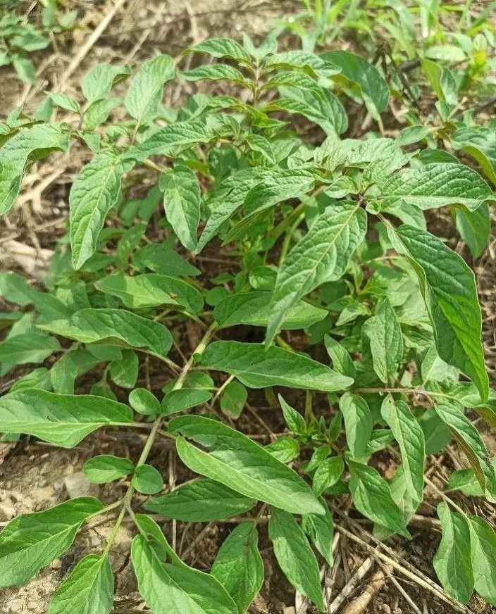
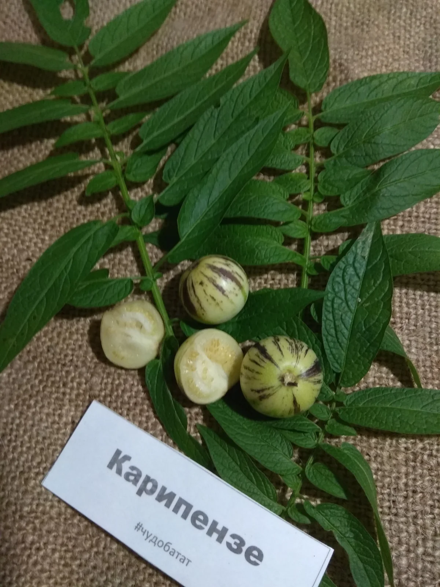
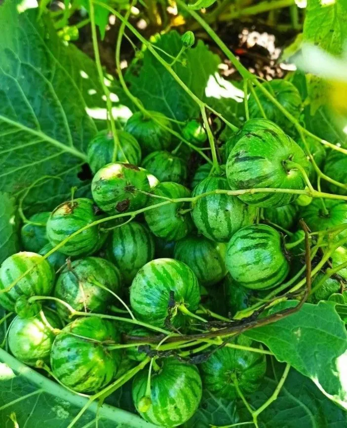

Родственник пепино из Южной Америки. Мелкие плоды с ароматом ананаса и дыни. Требует дозаривания для раскрытия вкуса.
Преимущества культуры для вашего участка.
Каждый сорт уникален — от формы до вкуса.
Карипензе в разные сезоны: от всходов до сбора урожая.



Всё, что нужно знать о культуре: от посадки до хранения.
Карипензе — быстрорастущее растение, требующее терпения: плоды раскрывают вкус только после дозаривания.
После дозаривания плоды становятся сладкими с ароматом ананаса и дыни. Важно набраться терпения — вкус появляется только через 1–1,5 месяца после сбора.
Оптимальные сроки посева — 1–2 декада марта. Семена выкладывают на поверхность почвы в отдельные стаканчики, чтобы не повредить стержневой корень.
До октября плоды остаются зелёными и безвкусными. После уборки в помещении за 1–1,5 месяца они меняют цвет на жёлтый и приобретают характерный сладкий вкус и аромат.
Посадочный материал из коллекции Batatchudo и рекомендации по выращиванию.